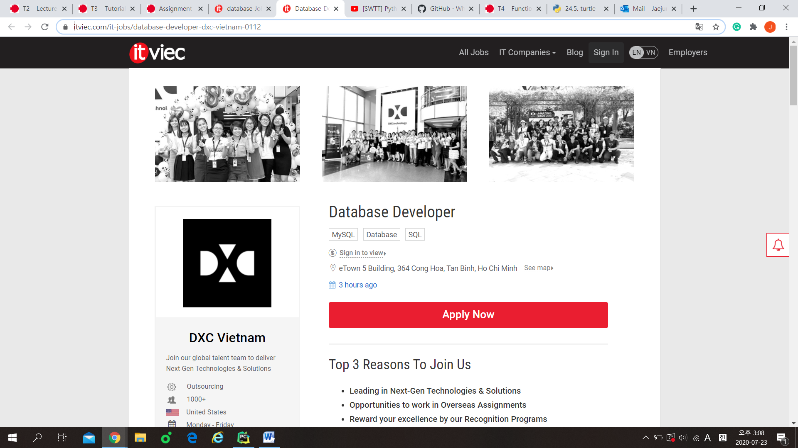

2. Database developer is a job that collects various data in one field and organizes necessary data and makes efficient use of it. Since I was young, I thought efficiency is important in whatever I do, so I found this job attractive to me and it was interesting to collect various information. 3. Every job has the necessary abilities. Database developer first needs more than two years of language experience, such as SQL and Oracle. In addition, they must have experience in developing ETL and must excel at SAP. Finally, good communication skills with team members are required. 4. Actually, I do not have any qualifications and experiences yet because I am on the starting step now and learning a few computer languages. However, as I mentioned at above, I am trying to hard at my subjects and will get computer skills. Firstly, I will finish Python, Java programming, SQL and Oracle then get the qualifications what compatible to me.